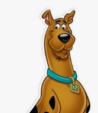
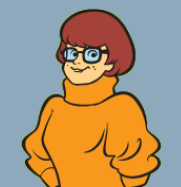
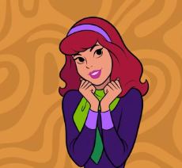
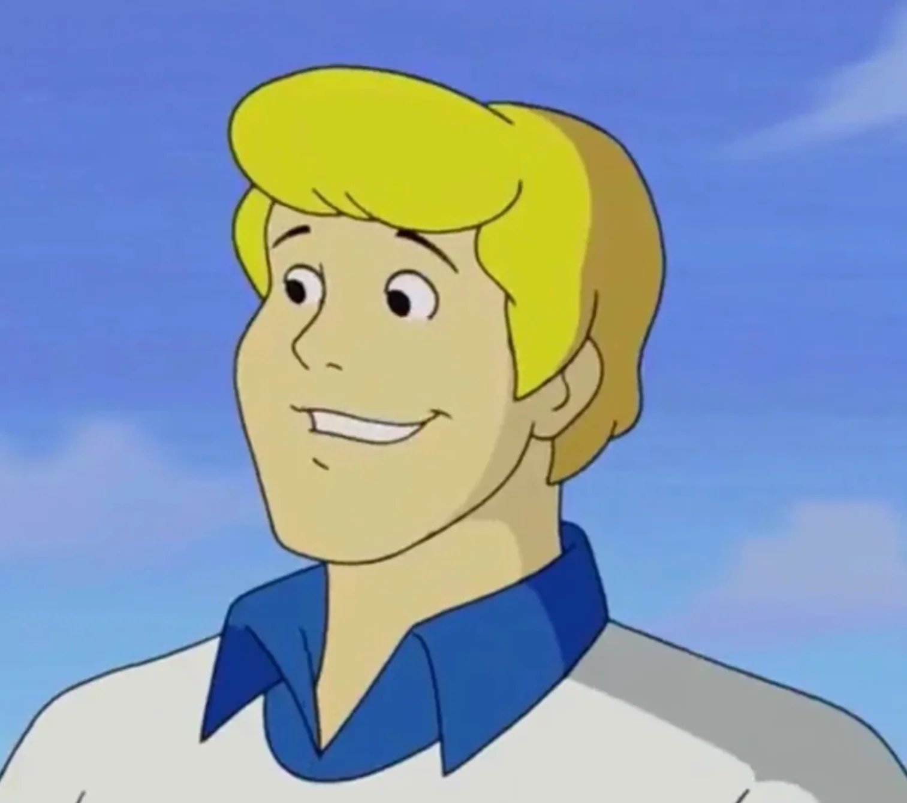
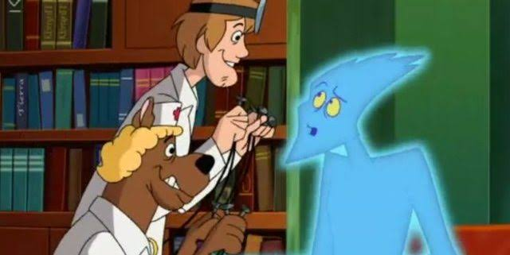
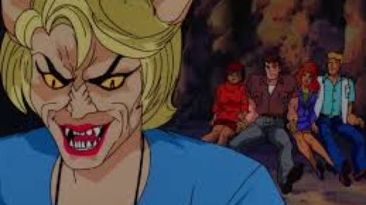

Scooby-Doo
Scooby-Doo e seus amigos acabam entrando em um jogo de computador. Dentro do jogo, eles precisam enfrentar desafios e resolver mistérios.
Scooby e sua turma chegam a uma ilha misteriosa. Lá eles encontram zumbis e precisam descobrir o que está acontecendo.

Cachorro medroso, comilão e melhor amigo do Salsicha. Sempre ajuda a turma a resolver os mistérios.
Frank Welker
Melhor amigo do Scooby e apaixonado por comida.
Scott Innes

Inteligente e responsável por resolver os mistérios.
Nicole Jaffe

Corajosa, sempre arrasando com seus looks e sempre pronta para ajudar a turma.
Grey DeLisle

Líder da turma e criador de armadilhas.
Frank Welker


O nome de Scooby-Doo foi criado por Fred Silverman, executivo da CBS. Ele se inspirou nas sílabas "doo-be-doo-be-doo" cantadas por Frank Sinatra no final da música "Strangers in the Night".
Uma famosa teoria criada por fãs afirma que Fred, Salsicha, Daphne e Velma teriam morrido em um acidente em 1969. Segundo a teoria, Scooby seria uma entidade capaz de recriar a realidade para manter seus amigos vivos.
Em Scooby-Doo na Ilha dos Zumbis, os monstros eram realmente sobrenaturais. Isso mudou uma das principais características da franquia, em que normalmente os monstros eram pessoas fantasiadas.
Na Ilha dos Zumbis, Scooby apresenta um comportamento diferente do habitual e fica agressivo com os gatos da ilha. Foi uma atitude incomum para o personagem.
Scooby-Doo e a Caçada Virtual foi uma das últimas produções oficiais do estúdio Hanna-Barbera Cartoons antes de sua incorporação pela Warner Bros. Animation.
A Caçada Virtual é considerada por fãs e críticos como o encerramento da chamada "Era Sombria" de Scooby-Doo, período em que os filmes tinham monstros reais e um clima mais assustador.
No filme live-action de 2002, a fachada externa da Ilha do Espanto foi gravada no Tangalooma Island Resort, na Austrália. O local também possuía muitos morcegos durante a noite.
Em Scooby-Doo 2: Monstros à Solta, uma ideia inicial era transformar Scooby em sua versão clássica de desenho animado 2D. A ideia acabou sendo retirada do filme.